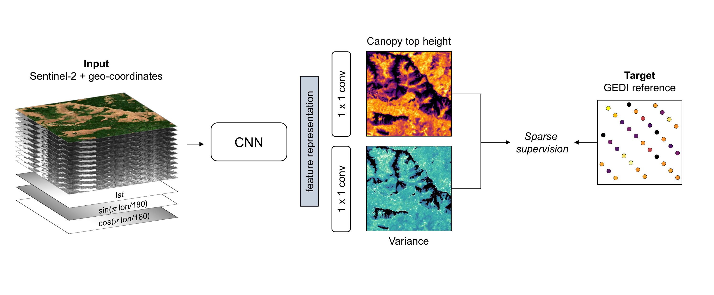

The worldwide variation in vegetation height is fundamental to the global carbon cycle and central to the functioning of ecosystems and their biodiversity. Geospatially explicit and, ideally, highly resolved information is required to manage terrestrial ecosystems, mitigate climate change, and prevent biodiversity loss. Here, we present the first global, wall-to-wall canopy height map at 10 m ground sampling distance for the year 2020. No single data source meets these requirements: dedicated space missions like GEDI deliver sparse height data, with unprecedented coverage, whereas optical satellite images like Sentinel-2 offer dense observations globally, but cannot directly measure vertical structures. By fusing GEDI with Sentinel-2, we have developed a probabilistic deep learning model to retrieve canopy height from Sentinel-2 images anywhere on Earth, and to quantify the uncertainty in these estimates. The presented approach reduces the saturation effect commonly encountered when estimating canopy height from satellite images, allowing to resolve tall canopies with likely high carbon stocks. According to our map, only 5% of the global landmass is covered by trees taller than 30 m. Such data play an important role for conservation, e.g., we find that only 34% of these tall canopies are located within protected areas. Our model enables consistent, uncertainty-informed worldwide mapping and supports an ongoing monitoring to detect change and inform decision making. The approach can serve ongoing efforts in forest conservation, and has the potential to foster advances in climate, carbon, and biodiversity modelling.
Methodology
A probabilistic deep learning model has been developed to retrieve canopy top height from
Sentinel-2 images anywhere on Earth. This model, an ensemble of convolutional neural networks (CNNs), is trained with sparse supervision using canopy top height data derived from
NASA's GEDI full waveform LIDAR (i.e. estimated RH98 from
Lang et al., 2022). The predictive uncertainty of these dense estimates is quantified by modelling both the data uncertainty (aleatoric uncertainty) and the model uncertainty (epistemic uncertainty).

Illustration of the model training process with sparse supervision from GEDI LIDAR. The CNN takes the Sentinel-2 image and encoded geographical coordinates as an input to estimate dense canopy top height and its uncertainty (variance).
Google Earth Engine Assets
The global map (canopy height and standard deviation) is available on Google Earth Engine.
var canopy_height = ee.Image('users/nlang/ETH_GlobalCanopyHeight_2020_10m_v1');
var standard_deviation = ee.Image('users/nlang/ETH_GlobalCanopyHeightSD_2020_10m_v1');
Citation
@article{lang2022high,
title={A high-resolution canopy height model of the Earth},
author={Lang, Nico and Jetz, Walter and Schindler, Konrad and Wegner, Jan Dirk},
journal={arXiv preprint arXiv:2204.08322},
year={2022}
}